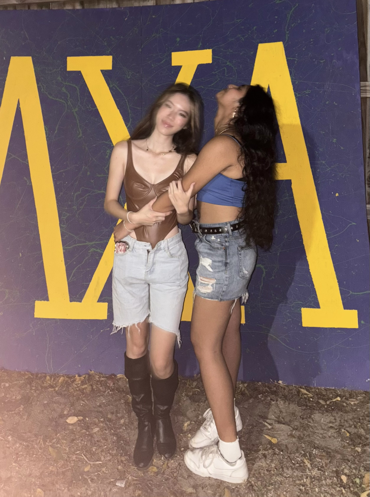
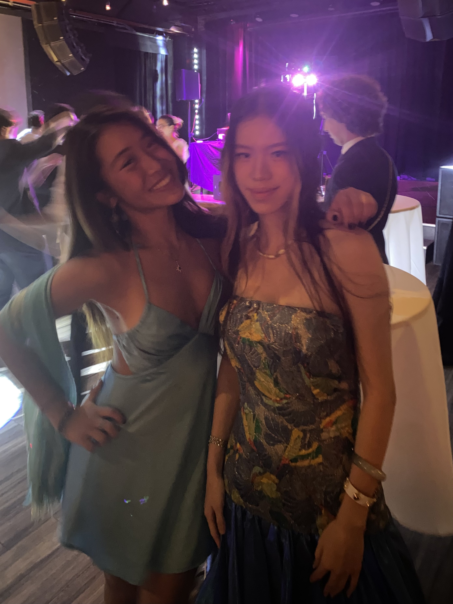
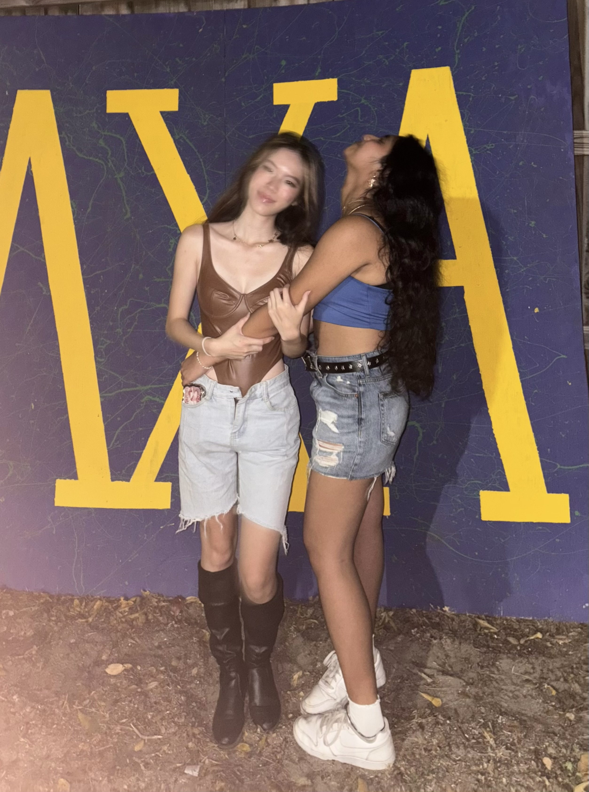
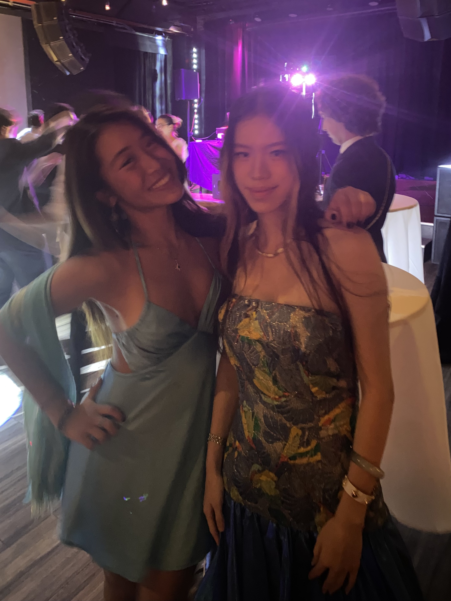
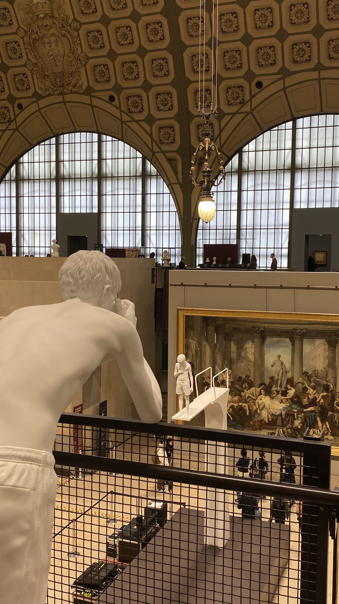
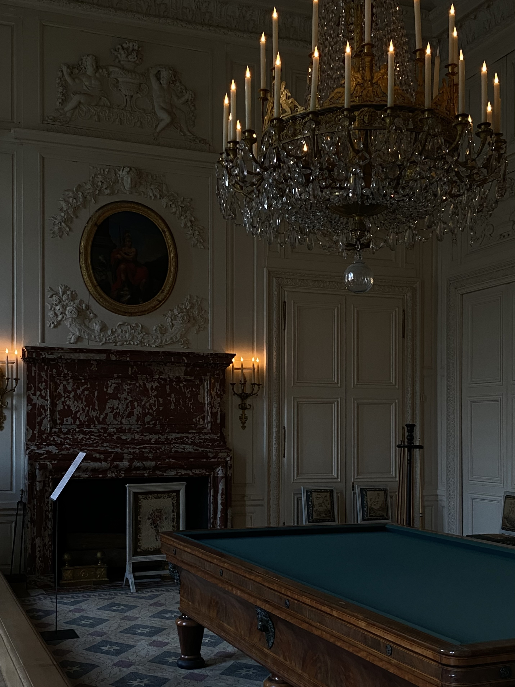
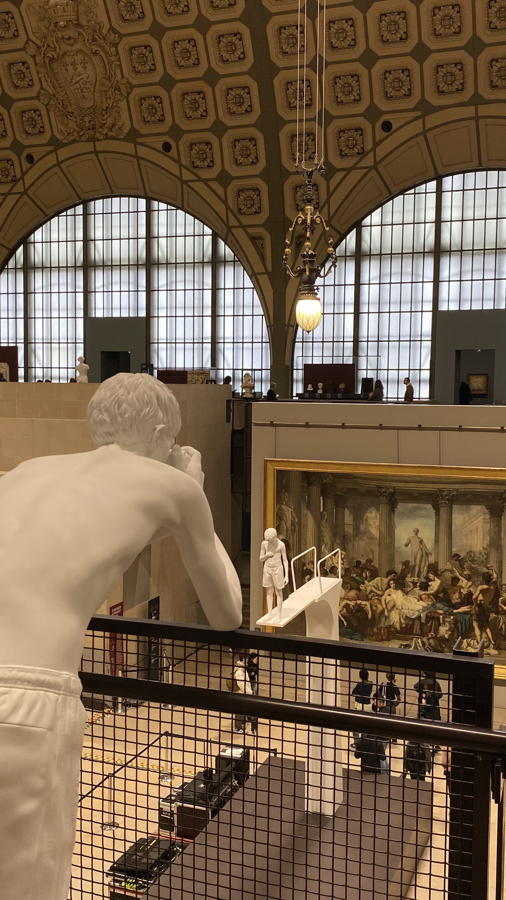
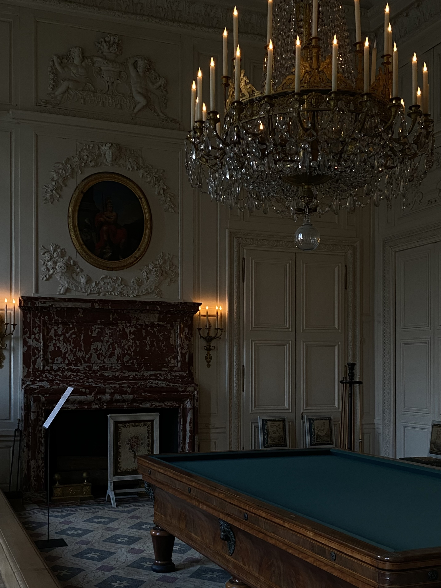

45² year in review
2025 is a mathematically rare year as it's a perfect square (45²). The last perfect square year was 1936 (44²) and the next will be 2116 (46²), so this is most likely the only perfect square year that any of us will ever experience in our prime.
it's also a magical year in many other senses, in ai progress, in personal life, etc.
The second it turned Jan 1st 2025, I was in Paris. I was in the ER at a hospital, having spent New Year's Eve lying there, thinking I might die and that this was the end.
I wanted to see the Men's Foil Fencing World Cup scheduled in Paris in January, so I decided to ring in the new year there too, which turned out to be a terrible idea. Not long after arriving I caught that particularly virulent strain of Influenza A (if you recall) that was ravaging France at the time, and developed severe pneumonia(lung infection) as a complication.
I was admitted to the ER on New Year's Eve. While my friends and acquaintances were out joyfully celebrating at the Arc de Triomphe or elsewhere, I lay immobile, staring at the IV bag and counting the drops one by one. Funnily many people I knew happened to be in Paris for that new year but I felt none were close enough to bother, and asking them to give up their parties that night to visit me in the hospital seemed too much.
So I was ill and alone. But there's also an upside to starting a year this low: I largely remained unbothered by many other setbacks that happened later this year. Whenever I got irritated I'd remind myself that I'm so grateful for being healthy and alive.
There were also highs: I did go see the Men's Foil Fencing World Cup, and all the best male foilists in the world either shook my hand or hugged me!! I revisited some museums & visited new interesting places; I climbed and ran across the rooftops of Parisian buildings with an unhinged friend, just like in Assassin's Creed (yes exactly like the figure you saw in the Paris Olympics opening ceremony last year). I'm not sure how I ended up doing this; it's probably illegal and obviously deadly dangerous. We played too many VR games on Meta Quest 3 that reality started to feel like a virtual world to us, so why not run across the rooftops of Paris?
And where was I for Christmas before 2025 hit? I was in Berlin. I had a very classical Berlin Xmas. I went to the Berlin Cathedral to attend the Christvesper (Christmas Eve Service), received a spiritual baptism, and listened to the Bishop's deep concerns and hopes regarding humanity/wars/tech progress with my rusty German listening skills. Then I left the church and went to a famous gay club and partied until 3 AM.


From 'Christmas is here so be merry and bright' to 'Christmas is here so be gay and do crime' only took me one Uber, but I like to think I adhere to the religious precepts more strictly than the vast majority of Christians or Puritans.
I really like the metaphor of mirrors. Many years ago I named the secret digital space where I keep my journals "镜" (Mirror), because I hoped they would faithfully capture my thoughts and feelings. A friend who didn't recognize the Chinese character glimpsed it on my screen and asked what it meant, I told him it was "mirror," and he immediately said "oh so 'reflections'! that's a good metaphor for a place to store journals/diaries."
I was surprised since in Chinese the word for "reflection" (optical) isn't polysemantic in that way, so I hadn't connected the physical reflection in a mirror with "reflections" in the sense of introspective thinking. If you discard the semantic connections already pre-injected into your subconscious and really think about it, how does "an image seen in a mirror or shiny surface" directly connect to "serious thought or consideration"? Is there superposition in human mental models too when they created languages??
There's another mirror analogy. Inquiry into general intelligence often collapses into inquiry of self, as LLMs serve as a functional analogue to human cognition, and as a friend puts it 'a silicon substrate modeling carbon dynamics'. Though they're different in so many important ways (backprop vs. synaptic plasticity, gradient descent vs. Hebbian/biological learning), both architectures rely on the compositionality of simple units to approximate high-dimensional manifolds. They exhibit convergent inductive biases and training dynamics (specifically, non-monotonic phase transitions (grokking) and emergent circuit formation), implying that these distinct optimization processes settle into structurally similar basins within the loss landscape.
By now I've made significant progress on my confidence issues; I am now more biased toward "being mid & loud" rather than "being perfect & quiet." I didn't speak up or publish as much as I should've or could've this year, but I had a good time running weird experiments and discussing things with friends!
I explored a wide range of research as I was just trying to learn as much as I could so was willing to do whatever was given to me, until at some point I realized (or rather, admitted) my long-lasting passion: a new kind of complex-system-aware interpretability research (which is beyond mechinterp since "mechanistic" specifically refers to micro-level approaches), or as some put it, "the physics of AI." You can get a sense of it through some of Yizhou Liu and Ziming Liu's recent work, though we're not necessarily looking at the exact same details and our philosophies slightly diverge. (Why does it seem like everyone working in this niche direction has the last name Liu? My new collaborator is also a Liu.)
I learned many important lessons this year and will list 3 here, the first 2 of which are from a chat with Mark Galassi. Mark was a mentor figure to me in high school and I had a very intellectually satisfying time learning from/working with him. But I had this bad habit of assuming everyone hates me until I'm told otherwise, so after high school I funnily thought Mark hated me.
The reality was completely the opposite, this November he told me "I think of you as one of those people one rarely meets, who have both the originality and capability to carry out amazing things in the world." It was very surprising because Mark has worked with hundreds or more likely thousands of students over the past 30 or 40 years through both the National Lab and other educational programs, some of whom are people I myself look up to. It was instrumental in overcoming my persistent confidence issues, as that left no room for self-doubt.
The lessons:
1. Consistency is key. Lots of things in this world are about the classical exploration vs. exploitation tradeoff problem. It's good to explore more when young, but to do any great or groundbreaking work we must faithfully commit and work on it consistently over time. I think I'm ready to commit to my chosen question.
2. "Live the question now": to love the unresolved questions themselves instead of rushing for or stressing over the answers. It was important and comforting to me, and central to some of the critical issues I struggled with. The quote Mark sent me is from one of my favorite poets, Rainer Maria Rilke:
"Be patient toward all that is unsolved in your heart and try to love the questions themselves, like locked rooms and like books that are now written in a very foreign tongue. Do not now seek the answers, which cannot be given to you because you would not be able to live them. And the point is, to live everything. Live the questions now. Perhaps you will then gradually, without noticing it, live along some distant day into the answer."
3. Seek more rejections and figure out the limits via the negation strategy. This is a counter-intuitive lesson I learned the hard way:
A smooth life with no rejections = being in a state of chronic undervaluation;
Being frequently rejected = you are trying hard to truly match your value.
How can you know where the boundaries lie if you don't try? Only through the negation strategy can we discover the boundaries of ourselves and the world. This is especially true for job hunting, as a friend says: being rejected from an interview is better than not interviewing at all; getting rejected a few times before finding a place you love is better than staying where you are; and if you get rejected by everyone, it simply proves that your current spot is actually the best match for your value, so you can be happily stuck.
I need to more frequently do what I want to do, frequently make requests, and frequently accept the world's rejection.
I always liked the idea of being very deliberate, thinking abstract things through as intensely as possible and having well-thought-out mental models towards life/the world. In my own circle I'm one of the most contemplative people in this regard, until I met a friend who pushes it to an even higher level of abstraction. He operates under the assumption that identity is a solved problem of "wants" "expectations" and "risk functionals", I suppose it's nice to have the clarity of viewing people as agents with fixed utility functions moving through the world with distinct risk profiles (not that I think it's always effective or I endorse it). His (meta)utility function derivation is also interesting, and he ended up with this: to minimize entropy in all of the universe (and to prevent heat death). It's not on the same level of abstraction as mine and perhaps not the same direction either if we go deep into implications; I've settled with the same life narrative or utility function for many years, it can be interpreted as maximizing civic and intellectual engagement with the world. Anyways I don't intend to compare objectives or suggest ways of formulating a utility function for oneself here, I want to instead write about the danger of being overly serious in this discourse of 'purpose'.
I started thinking about the danger of being overly serious since reading Mark's birthday party invitation, he's turning 61 and has different musings on meaning from us young people. A Bertie Wooster quote from that invitation email made me think that any attempt at cosmic seriousness is gently punctured by the reminder that suffering/meaning/fate don't announce themselves with capital letters. They manifest as mundane inconveniences, bodily facts, and mildly ridiculous endings. And then, "so it goes on", life neither resolves nor escalates but just simply continues.
Mark also quoted something from Marvin the Paranoid Android. Marvin has been given cosmic awareness, near-infinite intelligence, and the burden of seeing the universe clearly, and the result is not enlightenment but terminal gloom. His misery is funny precisely because it's overdetermined: the universe is vast, pointless, and unimpressed, and Marvin knows this in excruciating detail. The joke, of course, is that knowing more does not make life feel more meaningful; Marvin is what can happen when the existential question is answered too thoroughly and without mercy.
Mark also mentions Bokononism (a fictional religion from Kurt Vonnegut's novel "Cat's Cradle") which I wasn't familiar with before so I did some research. Bokononism offers 'useful untruth'; It openly admits that its cosmology, rituals, and meanings are fabricated, but insists that they are still worth living by. Meaning here is not discovered or proven, it is played with, opted into, almost as an aesthetic or ethical choice. There can be several paths to enlightenment because enlightenment itself is not a single factual destination but a stance toward the absurd.
It seems meaning is not a solved equation but a recurring joke, sometimes dark, sometimes cozy, occasionally profound, and always unfinished. And yes, "so it goes on".
I also wanted to quote something Agniv sent me after reading an early draft of this piece: "I worry about overintellectualizing a personal life philosophy a lot … Though, I've come to realize that it actually doesn't matter how long/deep your intellectualization is, as long as you are able to use it to go out and do something in the world. The point of philosophy is action."
I've also thought a lot about life and death this year, but have not managed to write up some organized thoughts. I did write something relevant last year in the other blog post.
Here I retrieved some sad memories of losing a family member:
You looked very unwell, and I didn't know how to express my feelings to you, the only thing I could do was spend all my time sitting on the chair by your hospital bed.
Soon you passed away, people rushed to tell each other to come see you one last time before you turned into ashes, everyone started crying, and that scene felt a bit performative. To squeeze out tears I tried hard to recall things that would make me cry. Then I thought of when I was little, and you'd go out in winter to the breakfast shop to buy us breakfast; you never carried it back in your hands but always put it inside your coat right against your chest close to your heart, so that the few minutes of walking wouldn't let it get cold.
I probably shed quite a few tears but the acute pain didn't hit me, I couldn't wrap my head around the idea that you had died. What does it mean? I hadn't fully processed this concept so the pain was delayed. What do you mean that a human being with a physiological structure largely similar to mine, a Homo Sapiens, someone who was alive before dying, who used to talk to me and hug me, who taught me how to write my name many years ago, has now turned into a small box of incredibly light ashes?
I finally understood why urns are designed to be so heavy, because the ashes after a person is burned are too light and their family members would feel heartbroken holding them in their hands. How heavy or substantial a life was, yet it turned out to become so light in the end.
What is the strict boundary between life and death, it seems not that clear, is it death when the heart stops beating or when breathing stops or is it brain death or something else? But the boundary between a complete body and ashes is blindingly clear.
I fell in love with sailing this year. To sail in Florida, in the San Francisco Bay, and in Hong Kong, it's not like fencing where there's only the competitive aspect, you can choose to sail on race teams when you feel competitive, or just grab a book and idly while away an afternoon between the shimmering water and the bright sun. In the last few days of my 20 I encountered a sudden storm while sailing and capsized, the sailboat completely turtled and I tumbled into the water, i set sail again in a mood bouncing between 'scared shitless' and 'infatuated with this fear'. My feelings towards my upcoming 21st birthday back then were exactly like this, scared shitless but at the same time loving it with fear. 2 months+ into being 21, I still don't drink and adulthood still feels tangible yet elusive.
Starting at the age of 20 I occasionally have dreams about math; a few are real, a lot are just weird; e.g. there's one time I wasn't calculating a functional, I was physically shaping/holding it, feeling the cost of the path like tension in a wire, warping the manifold until it snaps into the low-energy state. I later figured this 'mathy dreams' thing happens to some other friends too, I guess everyone goes crazy around this age, and some even wrote down legit formulations after they woke up. I really hope I have more useful mathy dreams in the coming year.
When I was slightly younger I cared a lot about appearance. I was only interested in very good-looking people to optimize for stability: the idea was that if I were to go into this chaotic dating world to seek someone to date, I better date them for a relatively long time because if it's not stable then my mind will partly be occupied by such romance affairs and I sadly have a very limited cognitive bandwidth. Mental bandwidth is in fact worth spending more time thinking upon than people usually do, lots of things are interesting as an experiential layer but prohibitively resource-consuming as a background process in your subconscious, and this significantly affects your productivity/creativity/momentum.
To ensure I have the bandwidth to do useful things I want the romance life to be as stable as possible (ideally it'd feel so natural/stable that I don't think about it at all), and I knew that I have enormous patience with very pretty people (level of patience is linearly proportional to level of beauty). So if it's a very good-looking person I'd tolerate many things and put up with shits which might otherwise break the relationship in average cases. So for years I wanted extremely beautiful people for maximum stability, and it was a good strategy until I started considering much longer term things (e.g. a monogamous life partner).
Beauty might not be sufficient in this context, and the previous utility function discourse is highly relevant here. Perhaps I should seek out someone who's also very deliberate, so that we can compare our well-thought out objectives and determine that the cosine similarity is high enough that our union is naturally helpful to each other's life without either of us having to change much. Does it mean I should lower the appearance standard, and if so by what margin, i don't know. I have not yet figured out answers to the many following questions under this idea, which is ok, since I'm very young.
Do I have any actually actionable/useful dating advice here? No. (And don't ask a blind person for directions.) But one useful observation is that there are very horrible people out there so it doesn't hurt to be careful. I never regret being guarded in this context, I agree that vulnerability is essential for deep connections but it's totally worth it to trade a little vulnerability for the massive payoff of steering clear of disaster.
evaluated within 2025
The Platonic Representation Hypothesis
too many runner-ups, in fact i am not firm about this answer
Gödel, Escher, Bach: An Eternal Golden Braid
runner-up: I Am a Strange Loop
I read them when I was 16 and haven't read many interesting books over the past 5 years (so perhaps a bit uncultured), since I mostly read papers/essays/blogs nowadays.
All My Friends by LCD Soundsystem
Emergent Introspective Awareness in Large Language Models (it's somewhere between a blog and a paper)
runner up: group hugging theory by kipply
Live the Questions Now —- Rainer Maria Rilke, from "Letters to a Young Poet"
more of a letter than a poem, but it's the piece I mentioned earlier in this writing.

haven't decided.
I noted down some simple things below and I welcome all readers to hold me accountable. The full version of my goals will remain private.
- reply to messages&emails faster, at any point in time keep unread/unreplied communications across all platforms under 20
- sleep earlier (try to sleep before 11pm > 80% of the times)
- create recurring activities to regularly spend time with certain friends, can be intellectual (or even coworking), physical (sports, nature, walks), artistic, or just unhinged&funny
- write more & publish more (personally and academically and somewhere in between)
- more cold outreach

 



 




45² was a good year, and i'm confident 2026 will be better.
Dec 30th 2025
Chryseis Liu